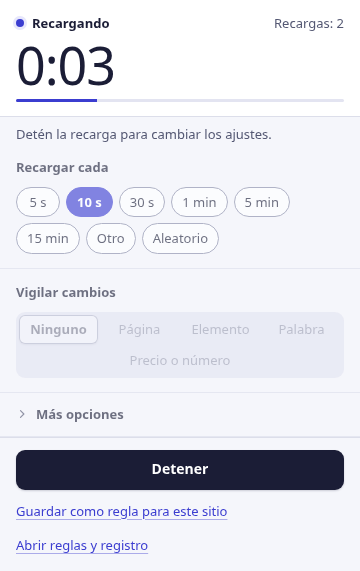
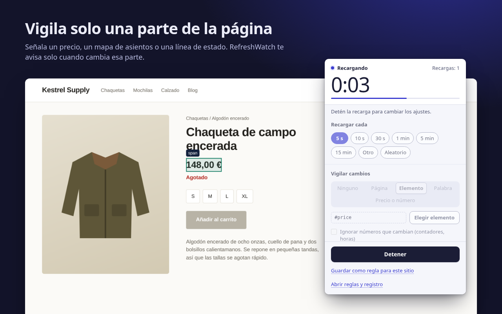
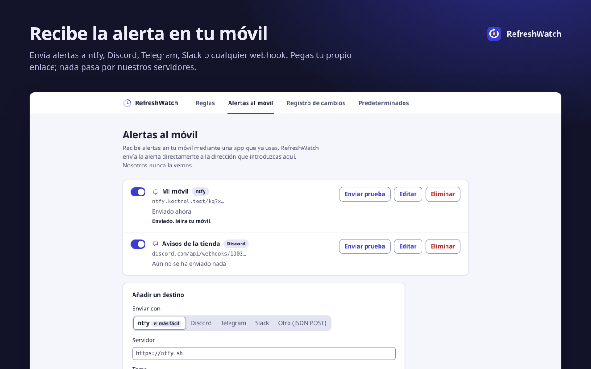
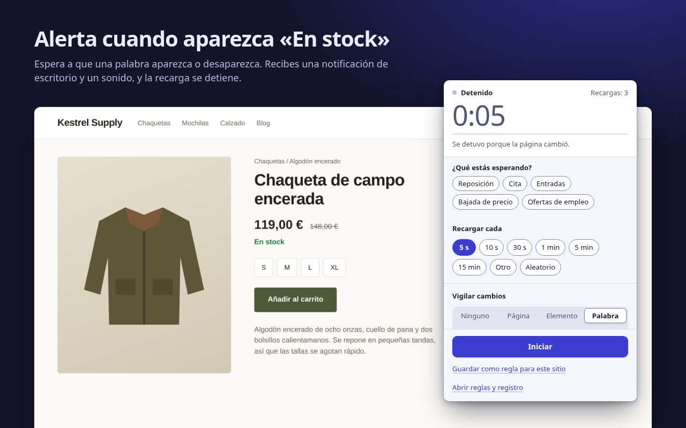

Recarga sola. Avisa al instante.
RefreshWatch recarga cualquier pestaña de Chrome con un temporizador y te avisa en cuanto cambia la página: un precio nuevo, una palabra como «En stock», una cita que queda libre.
Sin cuenta. Sin servidores nuestros. Para Chrome 120 o posterior.

Dile qué tiene que vigilar
Para recargar sin más, basta con elegir un intervalo. Añade una vigilancia y RefreshWatch comparará la página tras cada recarga y te avisará con una notificación y un sonido.
Toda la página
Cualquier cambio en el texto visible. Activa «Ignorar números que cambian» para que relojes y contadores no hagan saltar la alerta.
Un elemento
Señala un precio, un mapa de asientos o una línea de estado. Solo cuenta esa parte; el resto de la página puede cambiar sin problema.
Una palabra clave
Te avisa cuando aparece una palabra, como «En stock», o cuando desaparece, como «No hay citas disponibles».

Alertas en el móvil y bajadas de precio
Añade tu propio tema de ntfy, tu dirección de Discord, Telegram o Slack, o cualquier webhook, y RefreshWatch envía la alerta directamente allí. Sin cuenta con nosotros, y nada pasa por nuestros servidores.
Recibe un aviso en el móvil cuando cambie una web · Alerta de bajada de precio para Chrome (en inglés)

Gratis: funciones que otras extensiones cobran
Cada una de estas funciones está detrás de un plan de pago en al menos una extensión popular de recarga automática o de monitorización de páginas. En RefreshWatch forma parte de la extensión, sin versión de pago, sin periodo de prueba y sin cuenta. Algunos extras de pago de otras extensiones, como macros, alertas por correo o SMS y comprobaciones en la nube, RefreshWatch directamente no los ofrece.
| Función | Qué incluye | RefreshWatch |
|---|---|---|
| Vigilar una parte de la página | Elige cualquier elemento; avisa solo cuando cambia | Gratis |
| Alertas por palabra clave | Una palabra o frase aparece o desaparece | Gratis |
| Hacer clic en un botón tras recargar | Elige el botón y cuánto esperar | Gratis |
| Intervalo aleatorio | Cualquier valor entre dos cifras, de 1 segundo a 24 horas | Gratis |
| Ajustes guardados por página | Reglas por URL exacta, prefijo o comodín que se inician solas | Gratis |
| Sin límite de monitores | Todas las pestañas y reglas que quieras | Gratis |
| Registro de cambios | Los últimos 50 cambios, con el texto de antes y de después | Gratis |
Comparado con los planes de pago que figuran en Chrome Web Store y en las páginas de precios de cada proveedor, consultados el 9 de octubre de 2026. La comparación con una extensión muy conocida está en la página de la alternativa (en inglés).
Nada pasa por nosotros
RefreshWatch lee y compara las páginas en tu ordenador. No tiene servidor propio. Lo único que envía es una alerta, a un destino de alertas al móvil que configuras tú.
- Sin cuentaInstálala y empieza. No hay nada en lo que registrarse.
- Sin analíticas, anuncios ni rastreoNinguna petición de red, salvo las alertas al móvil que configures.
- Acceso a los sitios de uno en unoLa recarga automática sin más no necesita acceso a ningún sitio. Cuando activas la vigilancia en un sitio, Chrome te pregunta solo por ese sitio.
- Guardado en tu equipoLas reglas, los ajustes y el registro de cambios se quedan en Chrome en este ordenador y desaparecen al quitar la extensión.
Tres pasos de la pestaña abierta a la alerta
Elige un intervalo
Haz clic en el icono de RefreshWatch en la pestaña. Elige de 5 s a 15 min, un tiempo personalizado o un intervalo aleatorio.
Elige qué vigilar
Toda la página, un elemento que señales o una palabra clave. O nada, para una recarga automática sin más.
Recibe la alerta
Cuando llega el cambio, recibes una notificación y un sonido, y la recarga se detiene. Guárdalo como regla para que empiece solo la próxima vez.

Deja de darle a recargar
Gratis en Chrome Web Store, en inglés, árabe, alemán, español, francés, japonés, portugués de Brasil, chino simplificado y ruso.